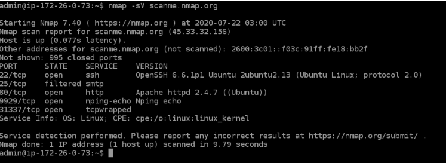
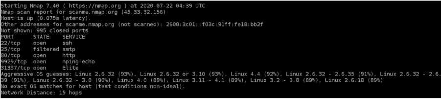
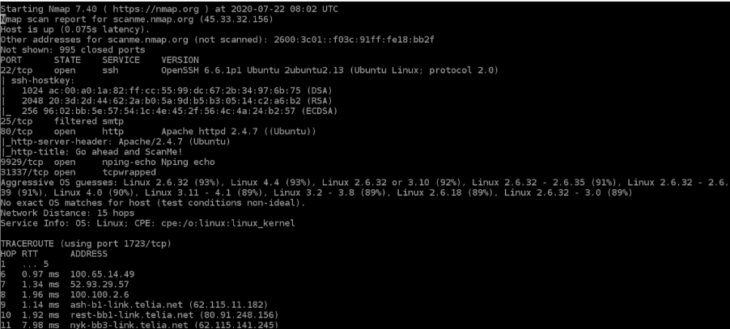
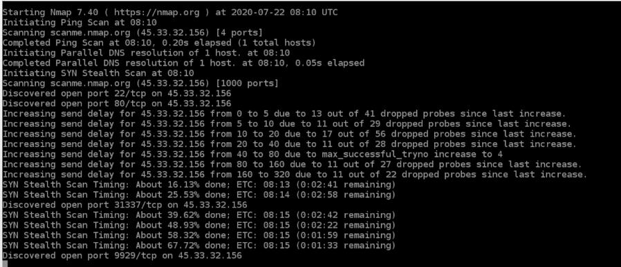

Nmap (“Network Mapper”) is an open source tool for network exploration and security auditing. It was designed to rapidly scan large networks, although it works fine against single hosts.
The output from Nmap is a list of scanned targets, with supplemental information on each depending on the options used. Key among that information is the “interesting ports table”. That table lists the port number and protocol, service name, and state. The state is either
The port table may also include software version details when version detection has been requested.
A TCP scan is generally used to check and complete a three-way handshake between you and a chosen target system. A TCP scan is generally very noisy and can be detected with almost little to no effort. This is “noisy” because the services can log the sender IP address and might trigger Intrusion Detection Systems.
UDP scans are used to check whether there is any UDP port up and listening for incoming requests on the target machine. Unlike TCP, UDP has no mechanism to respond with a positive acknowledgment, so there is always a chance for a false positive in the scan results. However, UDP scans are used to reveal Trojan horses that might be running on UDP ports or even reveal hidden RPC services.
This is another form of TCP scan. The difference is unlike a normal TCP scan, nmap itself crafts a syn packet, which is the first packet that is sent to establish a TCP connection. What is important to note here is that the connection is never formed, rather the responses to these specially crafted packets are analyzed by Nmap to produce scan results.
ACK scans are used to determine whether a particular port is filtered or not. This proves to be extremely helpful when trying to probe for firewalls and their existing set of rules. Simple packet filtering will allow established connections (packets with the ACK bit set), whereas a more sophisticated stateful firewall might not.
Let's look at some Nmap commands.
Scanning the list of active devices on a network is the first step in network mapping. There are two types of scans you can use for that:
>nmap -sp 192.168.1.1/24
>nmap scanme.nmap.org
Stealth scanning is performed by sending an SYN packet and analyzing the response. If SYN/ACK is received, it means the port is open, and you can open a TCP connection.
However, a stealth scan never completes the 3-way handshake, which makes it hard for the target to determine the scanning system.
> nmap -sS scanme.nmap.org
You can use the ‘-sS’ command to perform a stealth scan. Remember, stealth scanning is slower and not as aggressive as the other types of scanning, so you might have to wait a while to get a response.
Finding application versions is a crucial part in penetration testing.
It makes your life easier since you can find an existing vulnerability from the Common Vulnerabilities and Exploits (CVE) database for a particular version of the service. You can then use it to attack a machine using an exploitation tool like Metasploit.
> nmap -sV scanme.nmap.org
To do a version scan, use the ‘-sV’ command. Nmap will provide a list of services with its versions. Do keep in mind that version scans are not always 100% accurate.
In addition to the services and their versions, Nmap can provide information about the underlying operating system using TCP/IP fingerprinting. Nmap will also try to find the system uptime during an OS scan.
> nmap -sV scanme.nmap.org
Again, OS detection is not always accurate, but it goes a long way towards helping a pen tester get closer to their target.
Nmap has an aggressive mode that enables OS detection, version detection, script scanning, and traceroute. You can use the -A argument to perform an aggressive scan.
> nmap -A scanme.nmap.org
Aggressive scans provide far better information than regular scans. However, an aggressive scan also sends out more probes, and it is more likely to be detected during security audits.
Nmap has the capability of scanning multiple hosts simultaneously. This feature comes in real handy when you are managing vast network infrastructure.
You can scan multiple hosts through numerous approaches:
> nmap 192.164.1.1 192.164.0.2 192.164.0.2
> nmap 192.164.1.*
> nmap 192.164.0.1,2,3,4
> nmap 192.164.0.0–255
Port scanning is one of the most fundamental features of Nmap. You can scan for ports in several ways.
> nmap -p 973 192.164.0.1
> nmap -p T:7777, 973 192.164.0.1
> nmap -p 76–973 192.164.0.1
> nmap --top-ports 10 scanme.nmap.org
Penetration testing can last days or even weeks. Exporting Nmap results can be useful to avoid redundant work and to help with creating final reports. Let’s look at some ways to export Nmap scan results.
> nmap -v scanme.nmap.org
The verbose output provides additional information about the scan being performed. It is useful to monitor step by step actions Nmap performs on a network, especially if you are an outsider scanning a client’s network.
Nmap scans can also be exported to a text file. It will be slightly different from the original command line output, but it will capture all the essential scan results.
> nmap -oN output.txt scanme.nmap.org
Nmap scans can also be exported to XML. It is also the preferred file format of most pen-testing tools, making it easily parsable when importing scan results.
> nmap -oX output.xml scanme.nmap.org